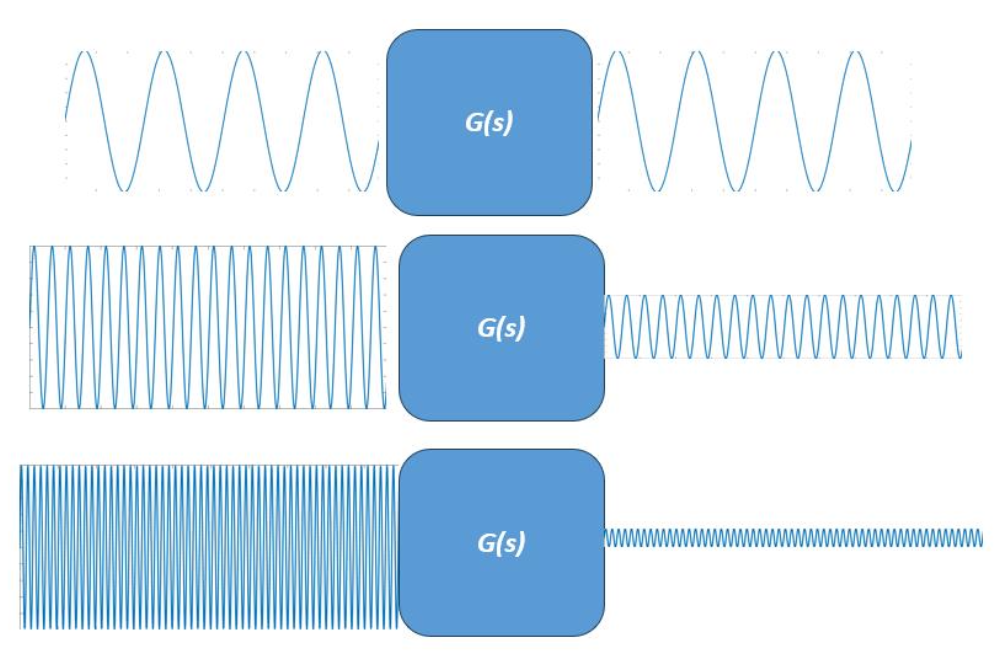
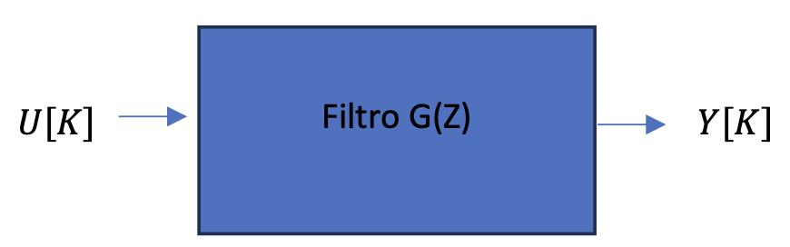
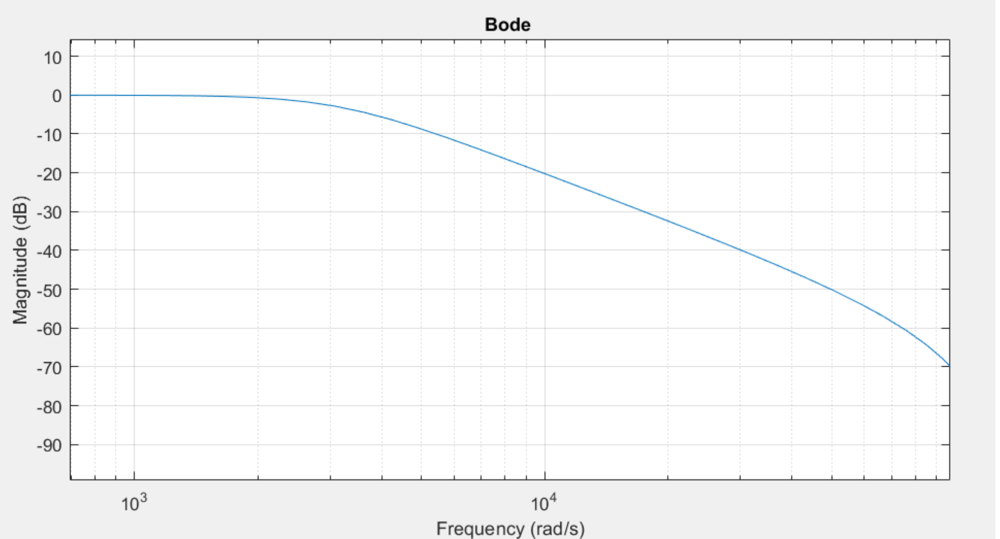

Projeto 7 – Filtros Digitais (Equalizador Digital de Áudio)
Um filtro digital é um sistema que processa sinais digitais com o objetivo de modificar ou extrair certas características do sinal, como remover ruído, destacar uma faixa de frequências ou limitar a largura de banda.
Ele atua sobre uma sequência de amostras (valores discretos no tempo do sinal digitalizado) e produz uma nova sequência como resultado.
Sabemos que um sinal pode ser decomposto em muitas senoides, de diversas frequências, certo?
Um filtro digital pode então ser visto como uma “peneira” que deixa passar apenas certas frequências que compõem o sinal (por exemplo, graves ou agudos) e bloqueia o resto.
Tipos de Filtros Digitais
Adotando como critério as frequências que um filtro bloqueia e as que mantém ou amplifica, categorizamos os filtros digitais em quatro tipos principais:
Filtro Passa-Baixa (Low Pass Filter)
- Elimina as frequências que compõem o sinal e que estejam acima de um dado limite denominado frequência de corte (𝑓₍corte₎).
Filtro Passa-Alta (High Pass Filter)
- Elimina as frequências que compõem o sinal e que estejam abaixo de um dado limite denominado frequência de corte (𝑓₍corte₎).
Filtro Passa-Faixa (Band Pass Filter)
- Elimina todas as frequências que estejam fora de uma faixa (intervalo) de frequências.
Filtro Rejeita-Faixa (Notch Filter)
- Elimina todas as frequências que estejam dentro de uma faixa (intervalo) de frequências.
Filtro de Picos (Peak Filter)
- Amplifica ou atenua uma certa faixa de frequências em uma quantidade desejada.
Comportamento de um Filtro Passa-Baixa
Um filtro passa-baixa atenua sinais de altas frequências, tendo o comportamento típico de sistemas dinâmicos cujas saídas são reduzidas para entradas acima de um certo valor — a frequência de corte.
A figura abaixo ilustra o comportamento de um filtro passa-baixa:

Aplicação de um Filtro Digital a um Sinal
Considere que temos um sinal contínuo $ x(t) $ que foi digitalizado e salvo em uma variável como uma lista de valores $ X[k] $, onde $ k = 0, 1, 2, 3, \ldots, \text{tamanho da lista} $.
Nosso objetivo é aplicar um filtro a esse sinal para eliminar ou amplificar determinadas faixas de frequências que o compõem.
Para isso, criamos uma nova lista, denominada lista de saída $ Y[k] $, que representará o sinal original filtrado.
- O sinal original $ X[k] $ é considerado a entrada.
- O sinal filtrado $ Y[k] $ é considerado a saída do filtro.
Cada valor da lista de saída é obtido a partir de uma fórmula que modifica os valores da lista original.
Em outras palavras, cada posição de $ Y[k] $ é uma combinação ponderada de valores da lista $ X[k] $ (entrada) e, em alguns casos, também de valores anteriores de $ Y[k] $ (saída).
Exemplo de Filtro Digital
Um exemplo de filtro que atua sobre o sinal original $ X[k] $ e produz o sinal filtrado $ Y[k] $ é:
$$ Y[k] = 1.8 \, Y[k - 1] - 0.7 \, Y[k - 2] + 0.2 \, X[k] + 0.3 \, X[k - 1] + 0.2 \, X[k - 2] $$
Observe que o sinal filtrado $ Y[k] $:
- Depende de valores anteriores de si próprio ($ Y[k-1], Y[k-2] $);
- E também de valores anteriores do sinal original ($ X[k], X[k-1], X[k-2] $).
A maneira como o filtro atua — se ele atenua, amplifica ou elimina certas frequências — depende diretamente dos coeficientes usados na fórmula.
Alterando esses coeficientes, é possível construir diferentes tipos de filtros: - Passa-baixa, que reduz altas frequências; - Passa-alta, que elimina baixas frequências; - Passa-faixa ou rejeita-faixa, que isolam determinadas bandas.
Implementação em Código
# Sinal original X[k]
X = [0.0, 1.0, 0.5, -0.5, -1.0, 0.2, ...] # exemplo
# Inicializa a lista de saída Y[k]
Y = [0.0] * len(X)
# Aplica o filtro
for k in range(2, len(X)):
Y[k] = 1.8 * Y[k-1] - 0.7 * Y[k-2] + 0.2 * X[k] + 0.3 * X[k-1] + 0.2 * X[k-2]
Representação de Filtro no Domínio Z
Ainda considerando o exemplo anterior, podemos avançar duas posições em todos os termos da equação.
Se a equação vale para $ k $, também valerá para $ k + 2 $:
$$ Y[k + 2] = 1.8 \, Y[k + 1] - 0.7 \, Y[k] + 0.2 \, X[k + 2] + 0.3 \, X[k + 1] + 0.2 \, X[k] $$
Operador Z
Em sistemas digitais, utilizamos o operador Z, um conceito amplamente presente em análise de sinais discretos.
Esse operador representa o avanço na posição de uma lista (ou sequência de amostras).
Por exemplo:
$$ Z \cdot Y[k] = Y[k + 1] $$ $$ Z \cdot Z \cdot Y[k] = Z^2 Y[k] = Y[k + 2] $$
Reescrevendo a Equação com o Operador Z
Aplicando o operador $ Z $ à equação anterior, temos:
$$ Z^2 Y[k] = 1.8 \, Z \, Y[k] - 0.7 \, Y[k] + 0.2 \, Z^2 X[k] + 0.3 \, Z \, X[k] + 0.2 \, X[k] $$
Agrupando os termos, obtemos:
$$ Y[k] \, (Z^2 - 1.8Z + 0.7) = X[k] \, (0.2Z^2 + 0.3Z + 0.2) $$
Função de Transferência no Domínio Z
Dividindo ambos os lados por $ X[k] $, temos a relação entre a saída e a entrada do filtro:
$$ \frac{Y[k]}{X[k]} = \frac{0.2Z^2 + 0.3Z + 0.2}{Z^2 - 1.8Z + 0.7} $$
Chamando essa relação de função de transferência discreta:
$$ G(Z) = \frac{Y[k]}{X[k]} = \frac{0.2Z^2 + 0.3Z + 0.2}{Z^2 - 1.8Z + 0.7} $$
Essa expressão é análoga às funções de transferência contínuas que você estuda em Controle de Sistemas, porém definida no domínio discreto (Z).
Relação entre os Domínios de Laplace e Z
Existe uma correspondência entre o domínio de Laplace (s) e o domínio Z, pois o operador $ s $ representa uma derivada temporal, enquanto no domínio discreto usamos diferenças finitas.
A aproximação é dada por:
$$ s \approx \frac{X[k + 1] - X[k]}{T} \quad \Rightarrow \quad s \approx \frac{Z X[k] - X[k]}{T} $$
Assim, o operador $ Z $ pode ser interpretado como o equivalente discreto do operador de Laplace, permitindo analisar sistemas digitais de forma semelhante aos sistemas analógicos.
Info
As teorias utilizadas para calcular os coeficientes corretos (os valores multiplicadores de $ X[k] $ e $ Y[k] $) são extensas e envolvem métodos avançados de projeto de filtros digitais.
Esses métodos estão além do escopo deste curso, mas ferramentas como Python, MATLAB — ou mesmo llms como Gemini ou ChatGPT — podem auxiliar na obtenção automática das funções de transferência para filtros desejados (passa-baixa, passa-alta, etc.).
Implementação discreta
Veja como o Python pode nos fornecer, por exemplo, os coeficientes de um filtro que elimina as frequências superiores a 500 Hz presentes num sinal de entrada, ou seja, um filtro passa baixas:

O filtro fornecido pelo Python é do tipo Butterworth (em homenagem a Stephen Butterworth).
Sua função de transferência discreta (no domínio Z, usando o operador de avanço $Z$) é:
$$ G(Z) \;=\; \frac{Y[K]}{X[K]} \;=\; \frac{0.00120741\,Z^2 + 0.00241481\,Z + 0.00120741}{Z^2 - 1.8993342\,Z + 0.90416304} $$
Lembrando: $Z$ representa avanço na sequência (ex.: $Z \cdot Y[k] = Y[k+1]$).
A partir de $G(Z)$, obtemos a equação a diferenças (forma causal, em termos de amostras passadas):
$$ \boxed{ \; y[k] \;=\; 1.8993342\,y[k-1] \;-\; 0.90416304\,y[k-2] \;+\; 0.00120741\,x[k] \;+\; 0.00241481\,x[k-1] \;+\; 0.00120741\,x[k-2] \;} $$
Os filtros passa-baixa são muito utilizados para eliminar ruídos de alta frequência contaminando um sinal de frequências mais baixas. Já os filtros passa-alta, teriam o efeito oposto, eliminando as baixas frequências de um sinal. Repare na figura a seguir o sinal original, filtrado por passa-baixa e filtrado por passa-alta:

Exercício 1
Grave ou gere matematicamente, com frequência de amostragem de 44.100 Hz, um sinal com alguns poucos segundos de duração que possua componentes (harmônicos) acima de 500 Hz.
- Mostre a FFT desse sinal, evidenciando que ele possui componentes acima de 500 Hz.
- Em seguida, implemente o filtro do exemplo anterior e realize a filtragem do sinal original.
- Mostre novamente a FFT do sinal filtrado, verificando que as frequências acima de 500 Hz foram atenuadas.
- Reproduza o áudio original e o áudio filtrado.
Responda:
Consegue perceber a diferença? O que notou de diferente entre os dois sinais?
Decibel (dB)
O decibel (dB) é uma unidade logarítmica utilizada para expressar razões entre grandezas — especialmente em contextos de potência, amplitude, tensão, sinal de áudio e resposta de sistemas.
Apesar do nome, o decibel não é uma unidade absoluta (como “metros” ou “segundos”).
Ele representa uma razão relativa, geralmente comparando um valor medido com um valor de referência.
A principal vantagem dessa escala é justamente o fato de ser logarítmica, permitindo representar intervalos muito extensos de forma compacta e intuitiva.
No dia a dia, você certamente já ouviu falar em decibéis quando o assunto é intensidade sonora.
Vamos entender o porquê essa unidade é tão usada e como ela funciona.
Escala Auditiva Humana
Para o ouvido humano perceber um som, é necessária uma intensidade acústica mínima de:
$$ 10^{-12} \; \text{W/m}^2 $$
Por outro lado, quando a intensidade atinge 1 W/m², começamos a sentir dor e até risco de lesão auditiva.
Observe como o intervalo entre esses dois extremos é enorme — varia de $10^{-12}$ até $1$!
Em vez de usar essa escala linear inconveniente, utiliza-se uma escala logarítmica, o decibel, para representar a intensidade sonora.
Definição Matemática
A intensidade acústica em decibéis ($I_{dB}$) é definida como:
$$ I_{dB} = 10 \cdot \log \left( \frac{I}{10^{-12}} \right) $$
onde:
- $I_{dB}$ → intensidade expressa em decibéis (dB)
- $I$ → intensidade sonora medida (em W/m²)
- $10^{-12}$ → intensidade de referência correspondente ao limiar de audição humana
Usamos o logaritmo da razão entre a intensidade medida e o limiar de audição, multiplicado por 10.
Dessa forma, a intensidade expressa em decibéis (𝐼₍dB₎) varia aproximadamente dentro do intervalo:
$$ 0 \; \text{dB} \; \text{(limiar da audição)} \quad \text{até} \quad 120 \; \text{dB} \; \text{(limiar da dor)} $$
Exemplo Prático
Suponha que temos uma onda sonora com intensidade:
$$ I = 10^{-4} \; \text{W/m}^2 $$
Aplicando a fórmula do decibel:
$$ I_{dB} = 10 \cdot \log \left( \frac{10{-4}}{10 \right) $$}
$$ I_{dB} = 10 \cdot \log (10^{8}) = 10 \cdot 8 = 80 \, \text{dB} $$
Portanto, uma intensidade de $10^{-4} \, \text{W/m}^2$ corresponde a 80 dB, um valor típico de sons altos, como o ruído intenso de trânsito ou uma música alta.
Exercício 2
Expresse em decibéis (dB):
-
A intensidade limiar da audição:
$$ I = 10^{-12} \, \text{W/m}^2 $$ -
A intensidade limiar da dor:
$$ I = 100 \, \text{W/m}^2 $$
Decibel para Sinais Elétricos
Quando tratamos de sinais elétricos provenientes de transdução (isto é, sinais que podem ser digitalizados), a intensidade do sinal é proporcional ao quadrado da amplitude da tensão.
Lembre-se da relação fundamental:
$$ P = U \cdot I = \frac{U^2}{R} $$
Razão de Intensidades e Ganho
Em processamento de sinais e técnicas de controle, é comum expressarmos a razão entre a intensidade do sinal de saída e a intensidade do sinal de entrada.
Essa razão é denominada ganho do processo, e expressa em decibéis (dB) pela fórmula:
$$ Ganho = 10 \cdot \log \left( \frac{I_{saída}}{I_{entrada}} \right) $$
Sabendo que $I \propto V^2$, podemos substituir:
$$ Ganho = 10 \cdot \log \left( \frac{V_{saída}2}{V_{entrada}2} \right) $$
Aplicando a propriedade dos logaritmos:
$$ Ganho = 20 \cdot \log \left( \frac{V_{saída}}{V_{entrada}} \right) $$
Expressão Geral do Ganho em Decibéis
Assim, quando falamos de sinais elétricos (de entrada e saída de um sistema), o ganho do sistema ou o ganho da função de transferência pode ser expresso como:
$$ G_{dB} = 20 \cdot \log \left( \frac{V_{saída}}{V_{entrada}} \right) $$
O Diagrama de Bode – resposta em frequência
Normalmente, o ganho de filtros ou outros sistemas lineares varia de acordo com a frequência do sinal de entrada.
Ou seja, a relação entre as amplitudes do sinal de saída e de entrada varia de acordo com a frequência do sinal de entrada (a frequência do sinal de saída é sempre a mesma que o de entrada, pois estamos tratando de sistemas lineares).
Assim, um gráfico muito útil é o denominado diagrama de Bode. Esse gráfico mostra o ganho em dB de um filtro (ou qualquer outra função de transferência representando um sistema linear) em função da frequência do sinal de entrada!
Existe também uma defasagem entre os sinais de entrada e saída, mas por ora não será importante nesse curso.
Exemplo
Repara no exemplo abaixo que mostra o diagrama de Bode do filtro utilizado no exercício 1:
$$ G(z) = \frac{Y[k]}{X[k]} = \frac{0{,}00120741\,z^2 + 0{,}00241481\,z + 0{,}00120741}{z^2 - 1{,}8993342\,z + 0{,}90416304} $$

O ganho em dB desse filtro varia com a frequência do sinal e entrada 𝑈[𝐾] de acordo com o diagrama de Bode abaixo:

Exercício 4a
Considere o filtro utilizado no exercício 1 e seu diagrama de Bode mostrado acima.
a1) Caso o sinal de entrada aplicado a esse filtro seja
$$U(t)=50\,\sin(10^4\,t)$$
qual seria a amplitude do sinal de saída?
a2) E caso o sinal de entrada fosse
$$U(t)=50\,\sin(10^3\,t)$$
qual seria a amplitude do sinal de saída?
Dica: leia no diagrama de Bode o ganho (em dB) correspondente às frequências $f = \dfrac{10^4}{2\pi} \text{Hz}$ e $f = \dfrac{10^3}{2\pi} \text{Hz}$, converta para vezes (linear) e multiplique pela amplitude de entrada (50).
Exercício 4b
Em filtros passa-baixa, define-se frequência de corte $f_c$ como a frequência em que a atenuação é de $-6 \text{dB}$.
- Estime $f_c$ do filtro passa-baixo do exemplo.
- Qual é a relação $\dfrac{A_{\text{out}}}{A_{\text{in}}}$ para um sinal cuja frequência é exatamente $f_c$?
Obs.: $-6 \text{dB}$ corresponde a uma razão de amplitudes de aproximadamente $0{,}5$.
Exercício 5
O notebook filtro_passa_faixa.ipynb (disponível no Blackboard) e no link contém:
-
A função de transferência discreta $G(z)$ de um filtro digital passa-faixa projetado para 2 kHz (frequência central).
- Rotina que plota o diagrama de Bode correspondente.
Tarefa
- Execute o código como está e observe o gráfico de magnitude.
- Localize a variável
Q(fator de qualidade) no script. - Altere
Qpara valores menores (ex.: 2, 5) e maiores (ex.: 20, 50). - Regenere o diagrama de Bode para cada valor.
O que descrever no relatório
- Largura da faixa de passagem (largura de ‑3 dB) em função de
Q. - Ganho de pico (em dB) próximo a 2 kHz.
- Acuracidade da frequência central (desloca-se com
Q?). - Comportamento nas bandas de rejeição (atenuação aumenta/diminui?).
> Conclua com uma frase curta:
> “O parâmetro Q controla ____________ do filtro passa-faixa.”
Exercício 6
O notebook filtro_notch.ipynb (disponível no Blackboard) e no link entrega:
-
Função de transferência discreta $G(z)$ de um filtro rejeita-faixa (notch) centrado em 2 kHz.
- Rotina que desenha o diagrama de Bode correspondente.
Tarefas
- Execute o código original e anote:
- profundidade do “vale” (atenuação em 2 kHz);
-
largura da banda rejeitada (–3 dB em relação ao ponto de menor ganho).
-
Varie o parâmetro
Q(fator de qualidade) para valores como 1, 5, 15, 30.
Observe como largura e profundidade do notch se alteram. -
Altere a frequência central (variável
f0) para 60 Hz, 1 kHz ou 5 kHz.
Verifique se o notch “anda” junto comf0. -
Reflita: onde um filtro desse tipo seria útil?
(Dica: 60 Hz, ruído de motores, interferência de sistemas de aquisição…)
O que incluir no relatório
- Tabela ou figuras com os gráficos de magnitude para diferentes
Q. - Frase curta:
“O fator Q controla ____________ do notch.” - Exemplo prático de aplicação (uma linha basta).